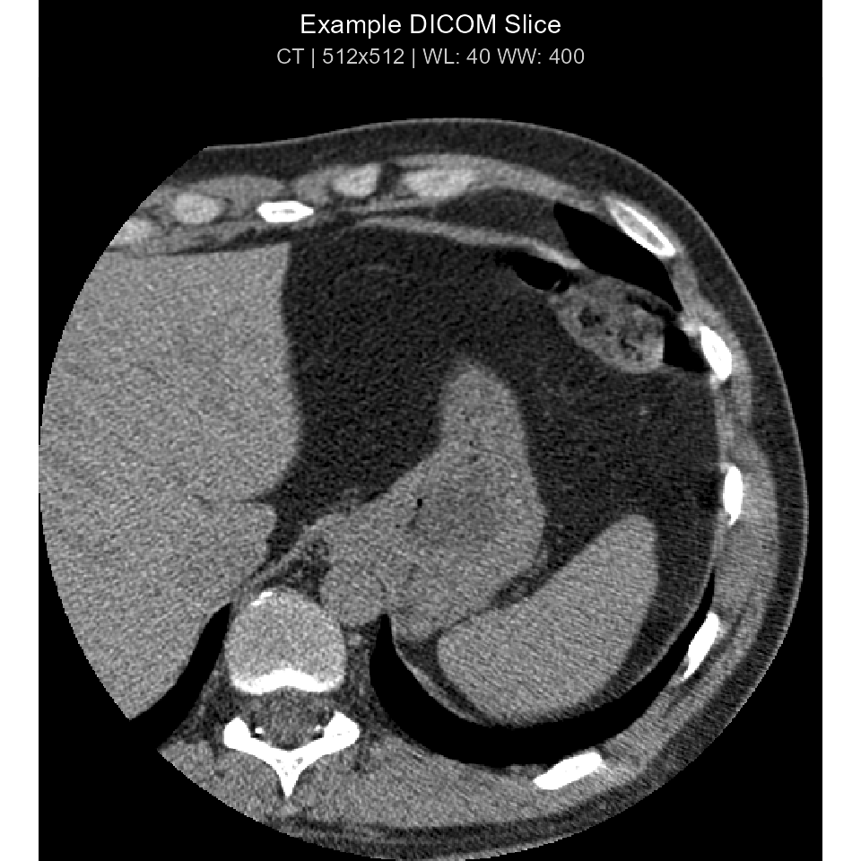

Overview
dicomtk is a self-contained, tidyverse-compliant R
interface to the OFFIS DICOM Toolkit (DCMTK 3.7.1) with
native C++17 / Rcpp bindings, ggplot2 /
Shiny / 3D volume visualization, PACS networking, and
local/cloud LLM integration (Ollama, OpenAI,
Anthropic Claude).
library(dicomtk)
library(dplyr)
#>
#> Attaching package: 'dplyr'
#> The following objects are masked from 'package:stats':
#>
#> filter, lag
#> The following objects are masked from 'package:base':
#>
#> intersect, setdiff, setequal, union
# Verify bundled DCMTK 3.7.1 engine & dictionary
dicom_info()
#> # A tibble: 1 × 5
#> dcmtk_version dictionary_standard dictionary_entries backend codecs_registered
#> <chr> <chr> <int> <chr> <lgl>
#> 1 3.7.1 PS 3.6-2026d / PS … 5277 Bundle… TRUEReading DICOM Headers & Tidyverse Workflows
dcm_file <- system.file("extdata", "example.dcm", package = "dicomtk")
# Long tidy tibble of DICOM elements
hdr <- read_dicom(dcm_file)
hdr |>
filter(group %in% c("0008", "0028")) |>
select(tag, vr, keyword, name, value) |>
head(10)
#> # A tibble: 10 × 5
#> tag vr keyword name value
#> <chr> <chr> <chr> <chr> <chr>
#> 1 (0008,0005) CS SpecificCharacterSet Specific Character Set "ISO_IR 100"
#> 2 (0008,0008) CS ImageType Image Type "ORIGINAL\\PRI…
#> 3 (0008,0012) DA InstanceCreationDate Instance Creation Date "20010101"
#> 4 (0008,0013) TM InstanceCreationTime Instance Creation Time "002816"
#> 5 (0008,0014) UI InstanceCreatorUID Instance Creator UID "1.3.6.1.4.1.5…
#> 6 (0008,0016) UI SOPClassUID SOP Class UID "1.2.840.10008…
#> 7 (0008,0018) UI SOPInstanceUID SOP Instance UID "1.3.6.1.4.1.5…
#> 8 (0008,0020) DA StudyDate Study Date "20010101"
#> 9 (0008,0021) DA SeriesDate Series Date "20010101"
#> 10 (0008,0022) DA AcquisitionDate Acquisition Date "20010101"
# Wide format (1 row per file, columns named by DICOM keyword)
read_dicom(dcm_file, wide = TRUE) |>
select(any_of(c("file", "Modality", "Rows", "Columns", "BitsAllocated")))
#> # A tibble: 1 × 5
#> file Modality Rows Columns BitsAllocated
#> <chr> <chr> <chr> <chr> <chr>
#> 1 "C:\\Users\\lauye\\AppData\\Local\\Temp\… CT 512 512 16Visualizing DICOM Images (ggplot2, Clinical Windows,
and 3D MPR/MIP)
plot_dicom(dcm_file, window = "auto", palette = "gray", title = "Example DICOM Slice")
Anonymization & Tag Modification
anon_path <- dicom_anonymize(
dcm_file,
patient_name = "STUDY^SUBJECT01",
patient_id = "SUBJ001",
shift_days = -365
)
dicom_tag_value(anon_path, c("PatientName", "PatientID", "PatientIdentityRemoved"))
#> PatientName PatientID PatientIdentityRemoved
#> "STUDY^SUBJECT01" "SUBJ001" "YES"AI / LLM Integration (Ollama, OpenAI, and Anthropic Claude)
# Configure local Ollama or OpenAI/Anthropic provider
# ollama_llm <- dicom_llm("ollama", model = "llava:13b")
# openai_llm <- dicom_llm("openai", model = "gpt-4o")
# claude_llm <- dicom_llm("anthropic", model = "claude-sonnet-4-20250514")
# Deterministic local mode for offline reproducibility
local_ai <- dicom_llm("offline")
dicom_summarize(dcm_file, llm = local_ai)
#> [1] "DICOM Study Summary: CT imaging study (General Study) acquired on GE MEDICAL SYSTEMS system. Series: SmartScore - Gated 0.5 sec (Body Part: Not specified). Image Matrix: 512 x 512 pixels (16-bit MONOCHROME2)."
dicom_report(dcm_file, llm = local_ai)
#> # A tibble: 4 × 2
#> section content
#> <chr> <chr>
#> 1 EXAMINATION CT - - SmartScore - Gated 0.5 sec
#> 2 TECHNIQUE DICOM Study Summary: CT imaging study (General Study) acquired on…
#> 3 FINDINGS DICOM Image Analysis (CT, 512x512, Photometric: MONOCHROME2): Res…
#> 4 IMPRESSION Automated quantitative and metadata review completed. Correlate c…